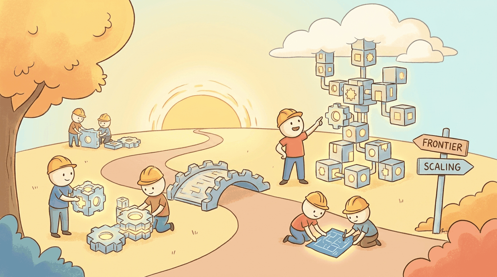

"The only thing I know is that I know nothing."
Frontier, Humbly Curious AI Agent
The previous chapters cover what the field has settled on. Part X covers what it has not. Emergent abilities (real or mirage?), alternative architectures (Mamba, RWKV, state-space models), world models, theory of reasoning in LLMs, the agency question, multi-tool orchestration economies, and LLMs as universal sequence machines. This chapter is what to read if you are a researcher choosing a thesis topic, or a founder choosing a moat that won't evaporate in 18 months.
Chapter Overview
This chapter examines the architectural and scaling frontiers that will shape the next generation of AI systems. It begins with the ongoing debate over emergent abilities: do large language models exhibit sudden, unpredictable capability jumps, or is this an artifact of measurement? It then surveys scaling frontiers including data walls, synthetic data strategies, test-time compute, and the alternative architectures (Mamba, RWKV, hybrid models) that challenge transformer dominance. The chapter continues with world models for video and simulation, formal frameworks for LLM reasoning, memory as a computational primitive, mechanistic interpretability at scale, the philosophical and engineering boundaries of agency, efficient multi-tool orchestration, and the expanding role of transformers as universal sequence machines across domains from genomics to robotics.
The Transformer may not be the final word in sequence modeling. This chapter explores emerging architectures like state-space models, mixture-of-experts variants, and retrieval-augmented pretraining that may shape the next generation of language models. Understanding these trends helps you future-proof the skills built throughout this book.
Learning Objectives
- Critically evaluate claims about emergent abilities in large language models
- Understand the data, compute, and architectural frontiers shaping next-generation models
- Compare transformer alternatives (Mamba, RWKV, hybrid models) and their trade-offs
- Assess when alternative architectures may be preferable to standard transformers
- Explain how world models bridge language understanding and physical reasoning through video generation, simulation, and embodied planning
- Analyze formal frameworks for LLM reasoning, including chain-of-thought computation, process reward models, and compositional reasoning limits
- Evaluate memory architectures (MemGPT, Letta) that extend models beyond fixed context windows
- Apply mechanistic interpretability techniques (sparse autoencoders, circuit analysis) to understand and debug model behavior
- Distinguish degrees of agency in AI systems and reason about safety implications such as instrumental convergence
- Design token-efficient tool orchestration patterns and evaluate the economics of multi-tool agent workflows
- Identify how transformer architectures generalize beyond text to domains such as genomics, protein folding, time series, and robotics
Prerequisites
- Chapter 04: Transformer Architecture (self-attention, positional encoding, encoder-decoder structure)
- Chapter 06: Pretraining & Scaling Laws (Chinchilla scaling, loss curves, compute-optimal training)
- Chapter 09: Inference Optimization (KV cache, quantization, speculative decoding)
- Comfort with logarithmic scaling plots and basic statistical reasoning about benchmarks
Sections
- 33.1 Emergent Abilities: Real or Mirage? The debate over whether large language models exhibit sudden, unpredictable capability jumps at scale, or whether this is a measurement artifact.
- 33.2 Scaling Frontiers: What Comes Next Data walls, synthetic data, test-time compute scaling, and the three axes of scaling (data, compute, inference).
- 33.3 Alternative Architectures Beyond Transformers State space models (Mamba), linear attention (RWKV), hybrid architectures (Jamba), and when to consider non-transformer alternatives.
- 33.4 World Models: Video Generation, Simulation, and Embodied Reasoning Internal representations that predict future states; Sora, Genie 2, and Cosmos; autonomous driving world models; interactive environments; agent planning with learned simulators.
- 33.5 A Theory of Reasoning in LLMs Chain-of-thought as emergent computation, formal frameworks for reasoning, process reward models, compositional reasoning limits, and connections to cognitive science.
- 33.6 Memory as a Computational Primitive Memory architectures beyond context windows (MemGPT, Letta), working memory vs. long-term memory, memory consolidation, and external memory as a Turing-completeness enabler.
- 33.7 Mechanistic Interpretability at Scale Sparse autoencoders for feature discovery, circuit analysis, superposition and polysemanticity, scaling interpretability to frontier models, and practical applications for debugging and safety.
- 33.8 The Nature of Agency: When Does a Model Become an Agent? Definitional frameworks for agency, degrees of autonomy, philosophical and engineering implications, and safety considerations including instrumental convergence and mesa-optimization.
- 33.9 Efficient Multi-Tool Orchestration and Tool Economy Token-efficient tool calling patterns, tool routing and caching, parallel execution, economic models for tool use, and benchmarking tool efficiency.
- 33.10 Beyond Text: LLMs as Universal Sequence Machines How transformer architectures process DNA, proteins, molecules, time series, music, EHR events, and robotic actions through domain-specific tokenization strategies.
- 33.11 What 2026 Settled (and What Remains Open) A retrospective on the ten LLM debates the field actually resolved in 2026 and the ten that remain genuinely open: scaling laws, open-weight catch-up, RAG vs long context, the reasoning-model paradigm, multi-agent claims, the MCP protocol war, SWE-bench saturation, hallucination, eval as the new bottleneck, EU AI Act.
What's Next?
From the frontier we cross into the practitioner's side: Part XI takes you from an idea to a shipped AI product, including unit economics, post-launch monitoring, and multi-provider strategy.